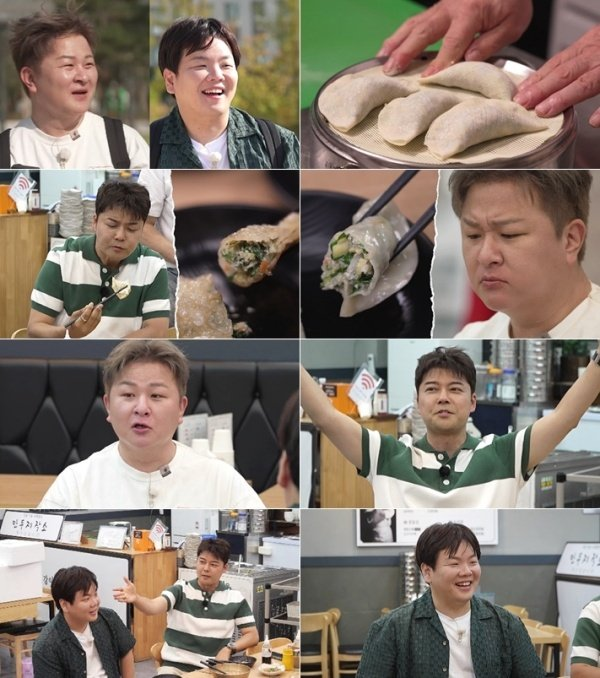
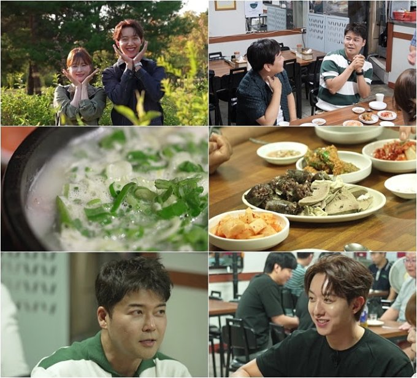
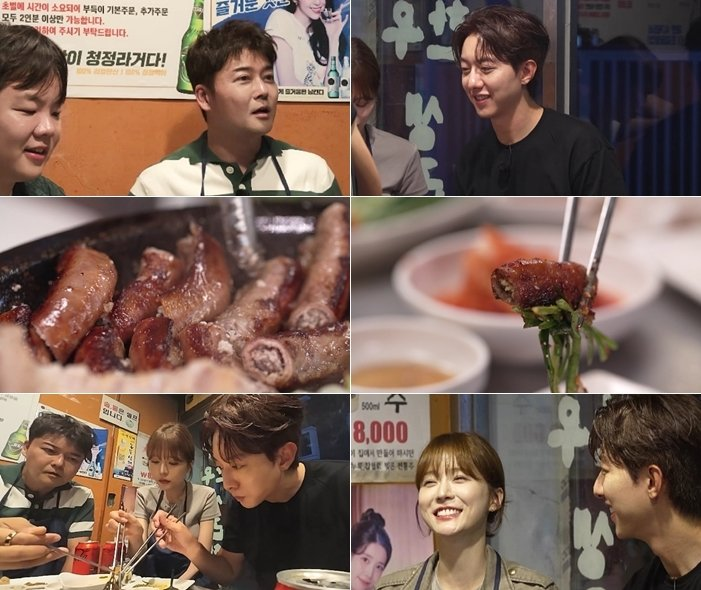

만두 한 집에서 315만 원. 11월 6일 방송된 '전현무계획4' 19회 인천편에서 가장 크게 다뤄진 숫자예요. 그런데 이날 전현무와 곽튜브가 들른 곳은 세 군데였어요. 어디서 무엇을 먹었는지, 방송 순서대로 정리했어요.
📷 사진 1 자리
▲ '전현무계획4' 19회 인천 청라 손만두집 장면 · 사진=MBN·채널S 제공
첫 코스, 청라 노포 손만두집
첫 먹친구는 청라에 사는 가수 허각이었어요. 세 사람이 찾은 곳은 청라의 오래된 만둣집이에요. 사장님이 직접 빚는 손만두가 간판 메뉴이고, 갓김치를 넣은 김치만두와 바삭하게 구운 군만두가 상에 올랐어요.
만두만 먹고 끝나지 않았어요. 평양냉면과 들기름 막국수까지 맛봤고, 마지막엔 곽튜브가 스태프 몫까지 챙겨 315만 원어치를 결제했어요. 만두 빚는 과정은 MBN 공식 클립에서 볼 수 있어요.
▶ 영상 1 자리
두 번째 코스, 손님이 추천한 25년 순댓국집
다음 먹친구는 배우 이정신과 오세영이었어요. 그런데 처음 찾아간 식당에서 섭외가 되지 않았어요. 일행은 현장에서 만난 손님의 추천을 듣고 근처 순댓국집으로 발길을 돌렸죠.
📷 사진 2 자리
▲ '전현무계획4' 19회 이정신·오세영과 찾은 순댓국집 · 사진=MBN·채널S ‘전현무계획4’ 제공
이곳은 25년 동안 순대를 직접 만들어 온 노포예요. 공식 클립 제목이 꼽은 메뉴는 파를 듬뿍 올린 순대국밥과 잡내 없는 머릿고기 수육이에요. 섭외 실패 뒤 우연히 들어간 집이 이날 두 번째 코스가 된 셈이에요.
▶ 영상 2 자리
마지막 코스, 당일 도축 생곱창
마지막은 그날 도축한 한우로 생곱창과 특양구이를 내는 집이었어요. 특양구이와 곱창을 차례로 구웠고, 끝은 볶음밥이었어요.
📷 사진 3 자리
▲ '전현무계획4' 19회 생곱창·특양구이 식당 장면 · 사진=MBN·채널S ‘전현무계획4’ 제공
이 자리에서 이정신이 볶음밥 팬을 잡아 주며 오세영에게 먼저 뜨라고 챙겼어요. 그 사이 자기 몫부터 뜨려던 전현무는 숟가락을 든 채 머쓱해졌고요. 깻잎을 두고 벌어진 장난도 공식 클립으로 올라와 있어요.
▶ 영상 3 자리
두 배우가 함께 나온 이유도 있어요. 이정신과 오세영은 MBN 새 수목드라마 '보스의 노골적 취향' 주연이에요. 이정신은 극 중 의사 역이라며 전현무의 '연애세포'를 살려 주겠다고 받아쳤어요.
세 곳을 이어 보면 이번 인천편의 중심은 '오래 해 온 집'이었어요. 직접 빚는 손만두, 25년 된 순댓국, 당일 도축 곱창까지 메뉴마다 만드는 방식이 먼저 소개됐죠. 섭외가 불발돼 손님 추천으로 들어간 집이 오히려 공식 클립 하나를 따로 차지한 점도 눈에 띄었어요.
'전현무계획4' 19회 인천편은 청라 손만두집, 25년 순댓국집, 생곱창집 순서였어요. 다음 회는 배우 이현욱이 함께하는 서울 편이라고 MBN 공식 예고가 알렸어요.


